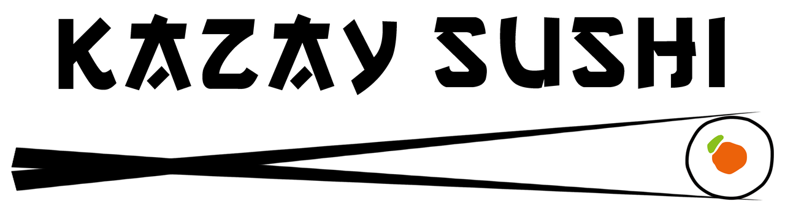

Rodízio
Salmão, atum e camarão em peças montadas na hora — do missoshiro ao hot roll, sem parar.
Ver o rodízio completo →
Kazay Sushi · Cardápio
Dois ritmos para a mesma obsessão pela perfeição: o rodízio contínuo e o menu à la carte, com peças montadas na hora.
Salmão, atum e camarão em peças montadas na hora — do missoshiro ao hot roll, sem parar.
Ver o rodízio completo →Cada peça escolhida a dedo: combinados, temakis autorais e pratos quentes à sua maneira.
Ver o menu completo →A casa
Pescados selecionados, arroz temperado na medida e peças montadas na hora. No Kazay, o cuidado começa na escolha do ingrediente e termina no último toque do molho.